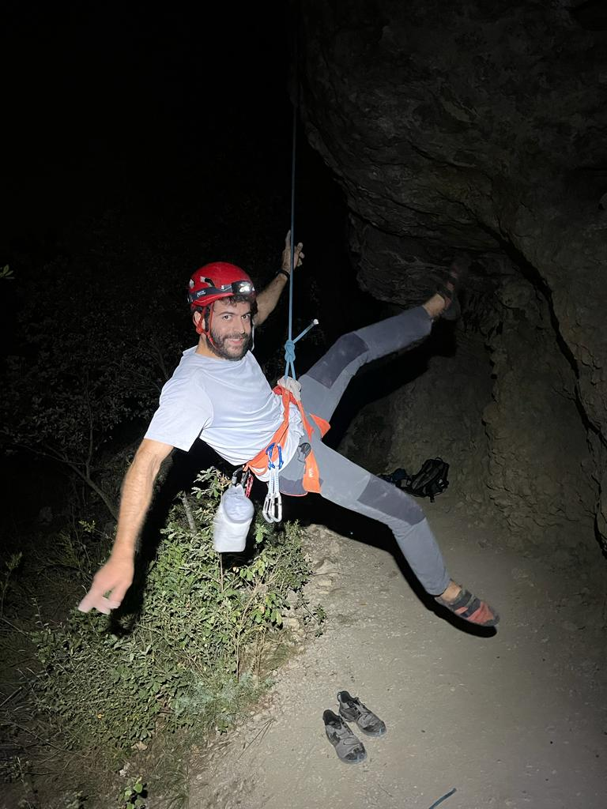

Sobre mí
Si estás buscando un resumen conciso de mi trayectoria académica y profesional, te invito a consultar mi CV.
Como economista convertido en entusiasta de la innovación y el conocimiento, he emprendido un viaje gratificante impulsado por la curiosidad y la pasión por aprender. Ahora, al acercarme a la finalización de mi tesis de doctorado, estoy ansioso por explorar nuevos rumbos y hacer la transición de la teoría a la acción. Aspiro no solo a analizar, sino también a implementar soluciones, presenciando su impacto transformador de primera mano. Aunque mi pasión por el pensamiento abstracto permanece intacta, estoy motivado para desempeñar un papel más práctico en ayudar a las organizaciones a conectar con su entorno y fortalecer su base de conocimientos.
Mi Formación y Trayectoria
Antes de embarcarme en mis estudios de doctorado en la Sociedad de la Información y el Conocimiento en la UOC, cursé una doble maestría en “Economía del Conocimiento e Innovación” y “Política Económica”. Mis estudios académicos me llevaron por toda Europa, desde Turín hasta París, con una parada en Burdeos para trabajar en mi tesis final de maestría.
Antes de mi aventura europea, desarrollé mis habilidades en economía a través de una licenciatura en la Universidad de Buenos Aires. En Buenos Aires, tuve el privilegio de contribuir como Consultor Económico en proyectos de la Comisión Económica para América Latina y el Caribe de las Naciones Unidas (CEPAL) y compartir mis conocimientos como profesor asistente y adjunto.
Durante mi licenciatura, tuve el privilegio de ser becario de investigación en el Centro de Investigación en Epistemología de las Ciencias Económicas (CIECE) de la Universidad de Buenos Aires, gracias a una beca nacional. Antes de mudarme a Buenos Aires, crecí en la pintoresca ciudad de San Carlos de Bariloche en la Patagonia.
Aficiones
Además de mi trabajo académico, me mantengo activo a través de deportes como la escalada y el running. el deporte y la actividad física en general. También disfruto de la improvisación teatral y sueño con publicar algún día un libro de humor gráfico.
Más allá de estas actividades lúdicas y recreativas, intento compartir mi visión sobre el mundo y su situación actual en mi blog personal.

:::